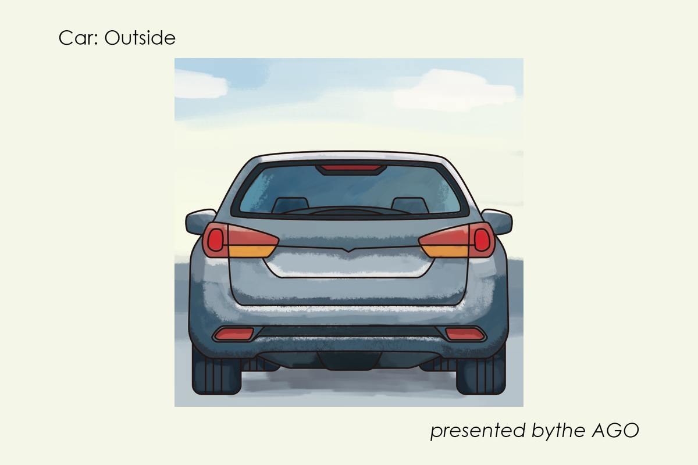
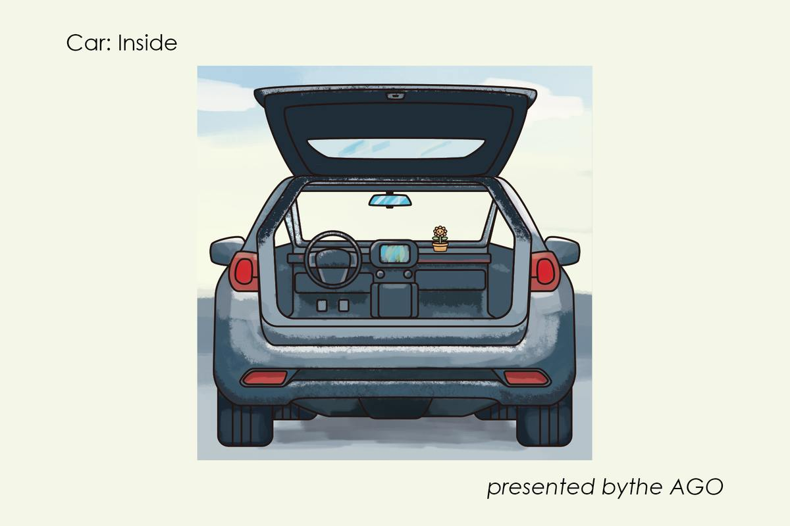
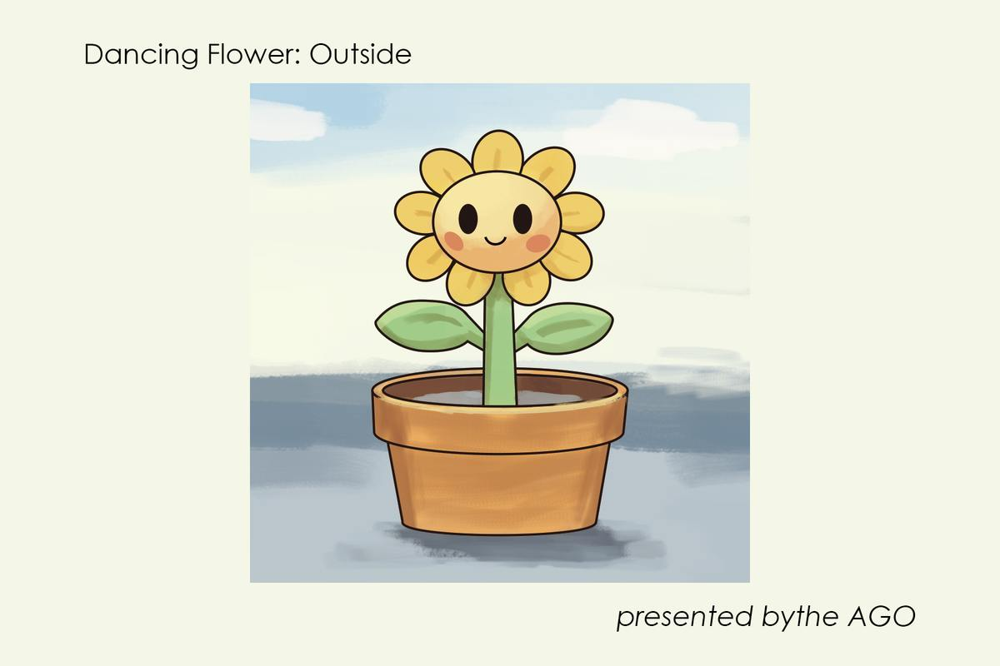
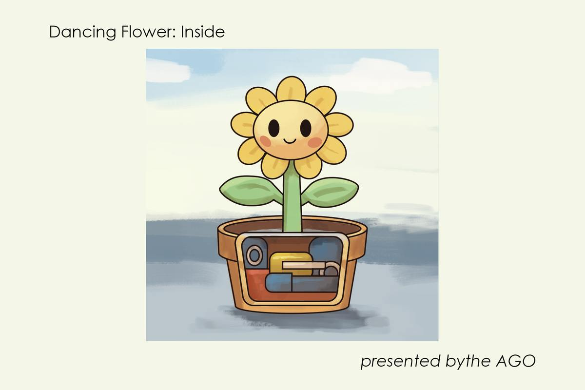

Postcards
Illustrated Postcards: Outside And Inside
A personal series of illustrated postcards, imagined for the Art Gallery of Ontario.
Each pair shows an everyday object from the outside, then opens it up to show what it holds: a car, and a dancing flower in its pot.
personal project




